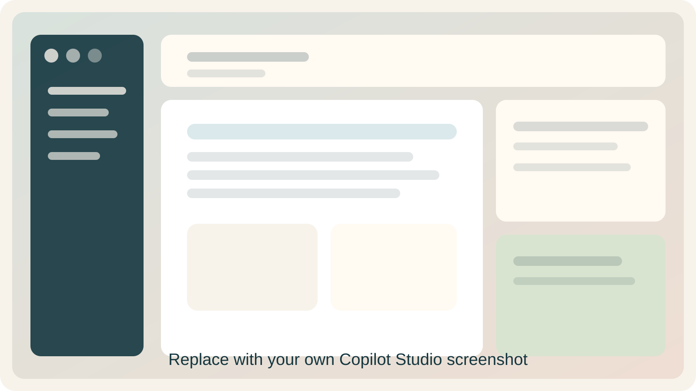
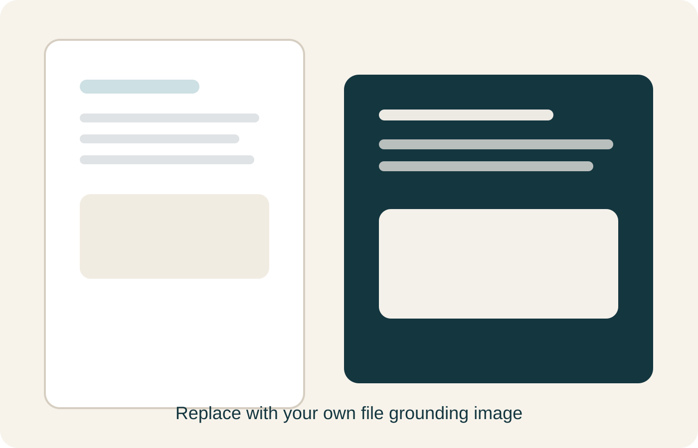

Copilot Studio fundamentals for all attendees

Presenter cue
Name only four surfaces: create, instruct, ground, test.
Minimal recipe
Role. Goals. Boundaries.
Clear and answerable
Forces a follow-up
Forces uncertainty handling

Word document
Spreadsheet
Spreadsheet or CSV
Teaching line
When the answers are weak, inspect the source before rewriting the prompt.
Morning message
MCP is how agents gain structured access to outside capabilities.
Working and testable
File or website
Afternoon build or applied use case
Copilot Studio Education